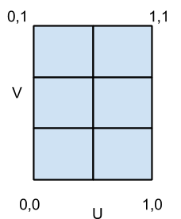

随设备大小改变而变化的图片:<picture >标签
picture-element
预览
缩小浏览器或在手机上看会发现小猫的动作变化了，也可以用media query
main code:
<picture>
<source media="(min-width: 650px)" srcset="images/kitten-large.png">
<source media="(min-width: 465px)" srcset="images/kitten-medium.png">
<img src="images/kitten-small.png" alt="a cute kitten">
</picture>
点状云
pointClouds.html
预览
修改自http://stackoverflow.com/questions/29909192/dynamically-change-point-color-in-three-js-pointclouod
main code:
var intensity = Math.random(0,( y + 0.1 ) * 8);
colors[ 3 * k ] = color.r * intensity;
colors[ 3 * k + 1 ] = color.g * intensity;
colors[ 3 * k + 2 ] = color.b * intensity;
geometry.vertices.push( v );
//colors[ k ] = ( color.clone().multiplyScalar( intensity ) );
colors[ k ] = color.clone().setRGB(colors[ 3 * k ],colors[ 3 * k +1 ],colors[ 3 * k +2 ])
k++;
canvas 示例
insectsmoving.html
预览
main code:
ctx.beginPath();
ctx.arc(bird.x, bird.y, 10, 0, Math.PI * 2, false);
ctx.closePath();
ctx.fillStyle = '#ffff60';
ctx.fill();
ctx.beginPath();
var front_pos = 8,
side_pos = 5;
ctx.fillStyle = 'black';
ctx.arc(bird.x + dx * front_pos - dy * side_pos, bird.y + dy * front_pos + dx * side_pos, 2, 0, Math.PI * 2, false);
ctx.closePath();
展示使用three.js时，如何在立方体geometry的一个面上使用多个拼接的texture，用于载入高质量图时分块载入图片
multiple Textures for one cube face in three.js
预览
main code:
vertices.forEach(function(v){
geom.vertices.push(new THREE.Vector3(v[0],v[1],v[2]));
});
faces.forEach(function(v){
geom.faces.push( new THREE.Face3( v[0],v[1],v[2] ) );
});
var a= [new THREE.Vector2(0,1),new THREE.Vector2(0,0), new THREE.Vector2(1,1) ];
var b= [new THREE.Vector2(0,0),new THREE.Vector2(1,0), new THREE.Vector2(1,1) ];
for(var i=0;i<48;i=i+2) {
geom.faceVertexUvs[0][i] = a;
geom.faceVertexUvs[0][i + 1] = b;
var randomIndex=Math.round(Math.random()*8);
geom.faces[i].materialIndex = randomIndex;
geom.faces[i+ 1].materialIndex = randomIndex;
}
css arrowbox
css arrowbox.html
预览
改变arrow:after 和arrow:before中的 border-width，margin-left值来改变箭头的大小，改变.arrow_box:before中的top和left值来改变箭头的位置
main code:
.arrow_box:after, .arrow_box:before { top: 100%; left: 50%; border: solid transparent; content: " "; height: 0; width: 0; position: absolute; pointer-events: none; } .arrow_box:after { border-color: rgba(136, 183, 213, 0); border-top-color: #88b7d5; border-width: 35px; margin-left: -35px; } .arrow_box:before { border-color: rgba(194, 225, 245, 0); border-top-color: #c2e1f5; border-width: 41px; margin-left: -41px; }
qunit demo
qunit exam.html
预览
main code:
QUnit.test( "equal test", function( assert ) {
assert.equal( 0, 0, "Zero, Zero; equal succeeds" );
assert.equal( "", 0, "Empty, Zero; equal succeeds" );
assert.equal( "", "", "Empty, Empty; equal succeeds" );
assert.equal( 0, false, "Zero, false; equal succeeds" );
assert.equal( "three", 3, "Three, 3; equal fails" );
assert.equal( null, false, "null, false; equal fails" );
});
html5 history demo
diveintohtml5 history demo
预览
利用html5的history api我们可以改变浏览器的历史记录，处理back键所导航的地址，从而使ajax请求下的back键不会失效
main code:
link.addEventListener("click", function(e) {
if (swapPhoto(link.href)) {
history.pushState(null, null, link.href);
e.preventDefault();
}
}, true);
sencha touch first experience
startApp.html
预览
start app
main code:
{
title: 'chart',
iconCls: 'home',
cls: 'home',
html: [
'<img width="260" src="http://staging.sencha.com/img/sencha.png" />',
'<h1>Welcome to Sencha Touch</h1>',
"<p>We're creating the Getting Started app, which demonstrates how ",
"to use tabs, lists, and forms to create a simple app.</p>",
'<h2>Sencha Touch</h2>'
].join("")
}
如何将整张图片作为texture映射到一个立方体上
http://solutiondesign.com/webgl-and-three-js-texture-mapping/
预览
观念：uvmapping
将整个texture作为map映射到object上，u，v代表横竖坐标
main code:
var bricks = [new THREE.Vector2(0, .666), new THREE.Vector2(.5, .666), new THREE.Vector2(.5, 1), new THREE.Vector2(0, 1)];
var clouds = [new THREE.Vector2(.5, .666), new THREE.Vector2(1, .666), new THREE.Vector2(1, 1), new THREE.Vector2(.5, 1)];
var crate = [new THREE.Vector2(0, .333), new THREE.Vector2(.5, .333), new THREE.Vector2(.5, .666), new THREE.Vector2(0, .666)];
var stone = [new THREE.Vector2(.5, .333), new THREE.Vector2(1, .333), new THREE.Vector2(1, .666), new THREE.Vector2(.5, .666)];
var water = [new THREE.Vector2(0, 0), new THREE.Vector2(.5, 0), new THREE.Vector2(.5, .333), new THREE.Vector2(0, .333)];
var wood = [new THREE.Vector2(.5, 0), new THREE.Vector2(1, 0), new THREE.Vector2(1, .333), new THREE.Vector2(.5, .333)];
geometry.faceVertexUvs[0][0] = [ bricks[0], bricks[1], bricks[3] ];
geometry.faceVertexUvs[0][1] = [ bricks[1], bricks[2], bricks[3] ];
geometry.faceVertexUvs[0][2] = [ clouds[0], clouds[1], clouds[3] ];
geometry.faceVertexUvs[0][3] = [ clouds[1], clouds[2], clouds[3] ];
geometry.faceVertexUvs[0][4] = [ crate[0], crate[1], crate[3] ];
geometry.faceVertexUvs[0][5] = [ crate[1], crate[2], crate[3] ];
geometry.faceVertexUvs[0][6] = [ stone[0], stone[1], stone[3] ];
geometry.faceVertexUvs[0][7] = [ stone[1], stone[2], stone[3] ];
geometry.faceVertexUvs[0][8] = [ water[0], water[1], water[3] ];
geometry.faceVertexUvs[0][9] = [ water[1], water[2], water[3] ];
geometry.faceVertexUvs[0][10] = [ wood[0], wood[1], wood[3] ];
geometry.faceVertexUvs[0][11] = [ wood[1], wood[2], wood[3] ];
使用react.js生成一个当前页面模块的组件
linkcomponent.html
预览
react.js 是用于创建组件化UI的javascript类库。在react中，数据是很重要的一部分，它的初衷就是处理数据更新频繁的页面。创建一个react组件的方式是从界面出发，将界面分为各个组件，每个组件拥有自己的数据，并且只需要各自的数据就能被生成。
main code:
React.render(
<LinkPart url="linkcomponent/posts.json"/>,
document.getElementById('container')
);
one line for one component
预览
plupload 使用演示
pluploaddemo.html
预览
1.plupload采用优先级为html5,flash,sliverlight,html4的方式http://plupload.com/docs/Chunking http://www.cnblogs.com/2050/p/3913184.html
示例展示了如何只允许上传1个文件，设置max_file_count为1，添加complete的响应事件
main code:
complete:function(event,args){
$('#uploader').plupload('disable');
console.log(args.files[0].name);
}